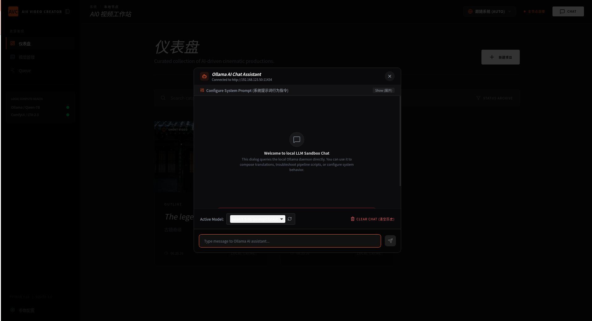
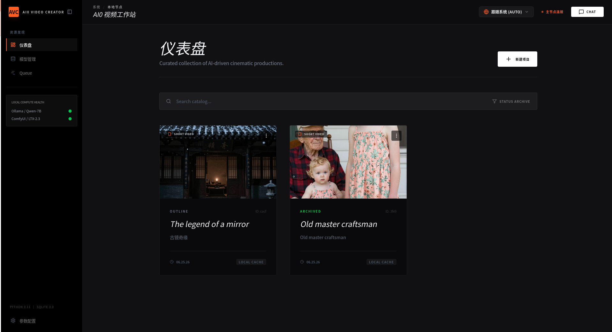
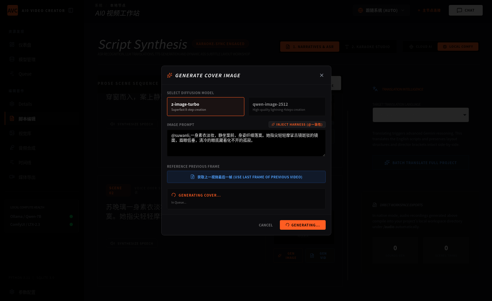
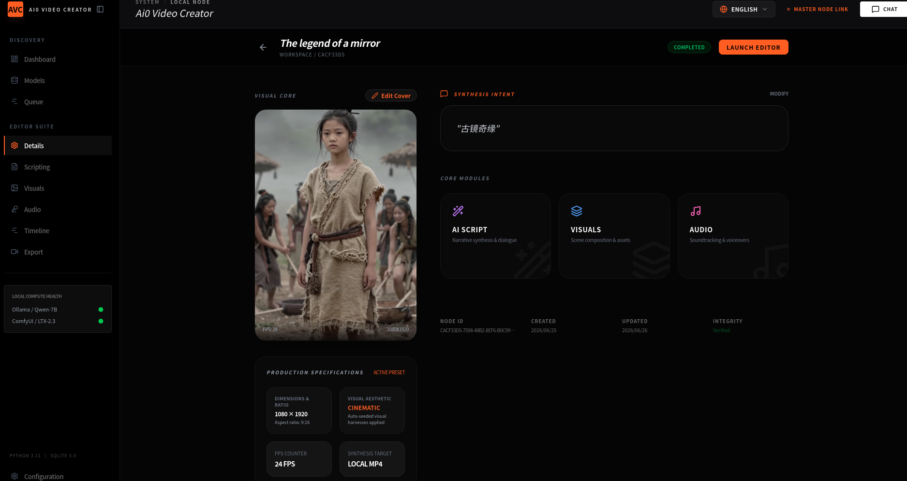
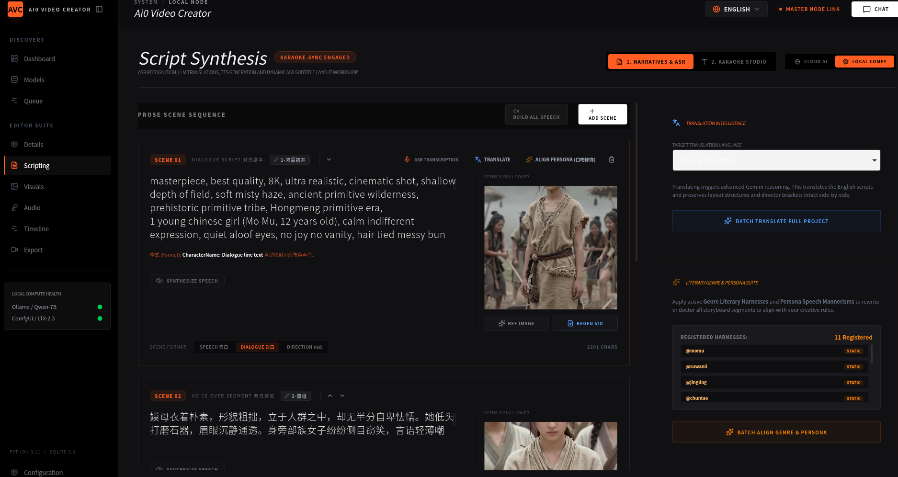
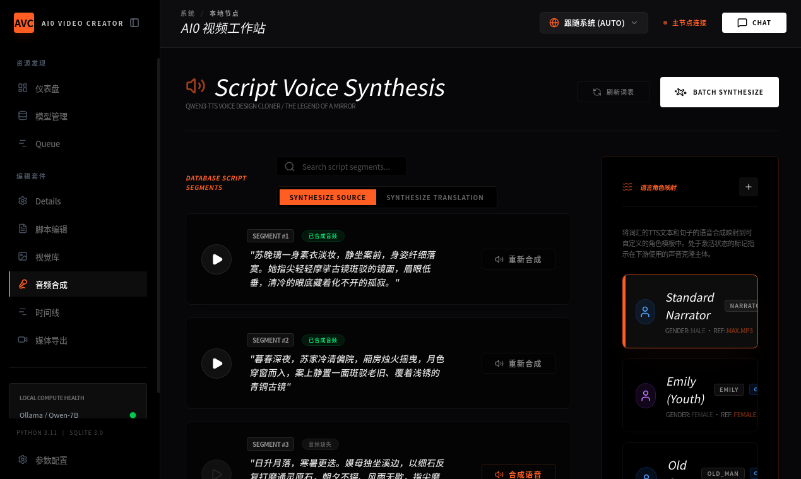
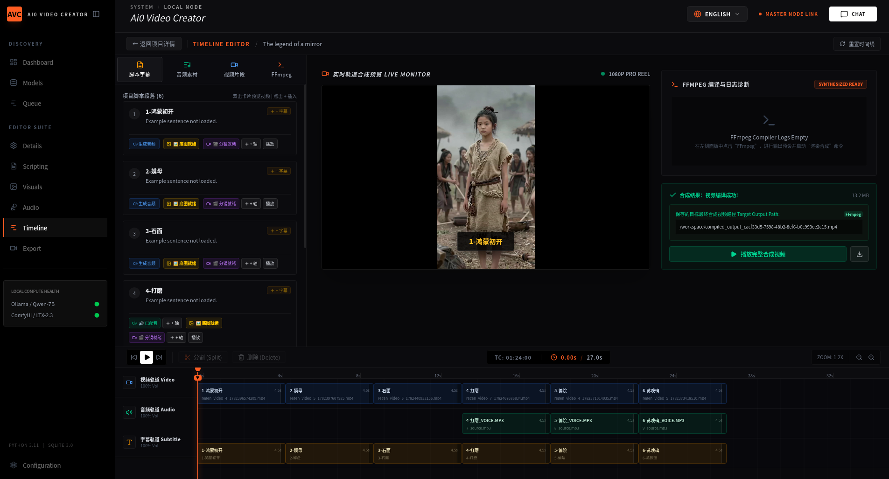
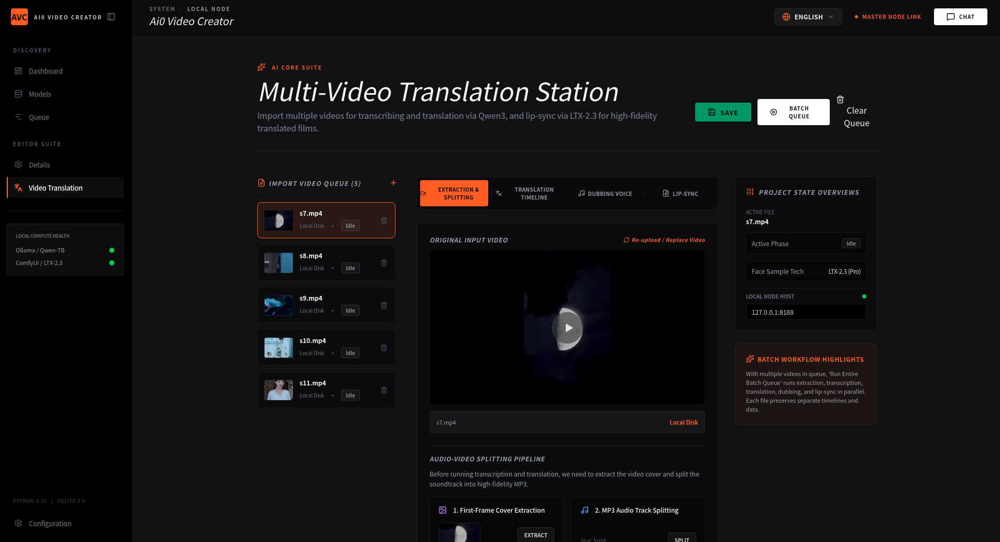
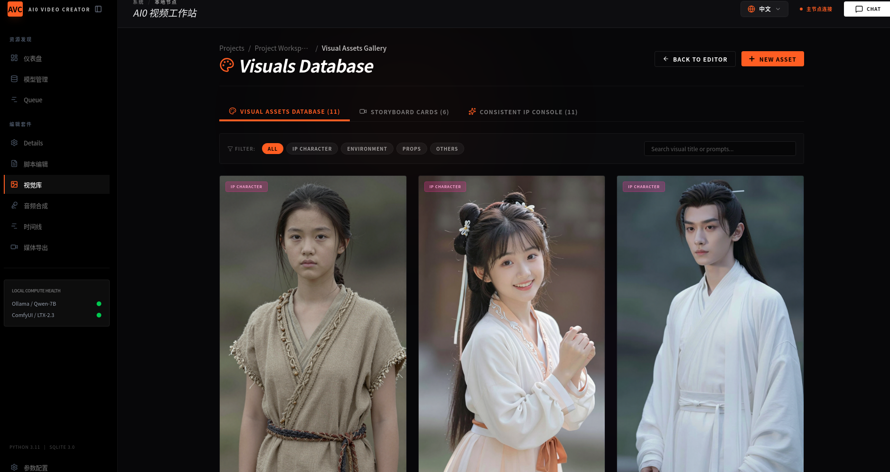

Full-featured Tauri v2 desktop AI video suite. Support local ComfyUI offline workflow & cloud API dual backend. Create short dramas, translated dubbed videos, vocabulary clips, dialogue scenes and original stories end-to-end.
Connect your local ComfyUI instance with LTX-2.3 support. All video rendering run on your GPU, no private data uploaded to cloud. Optimized for RTX3060 12GB low VRAM GPUs.
For devices without powerful discrete GPU. Switch to remote cloud video generation API to produce all types of video content locally inside the desktop app.
Save reusable IP characters, environments and props. Lock character facial features to eliminate flicker across all generated video shots.
Write scene dialogue, voiceover and cinematic prompts. Local LLM for translation, character tone adjustment, one-click bind assets to ComfyUI render jobs.
Custom voice clone, batch voice line generation. Map independent speaker roles for multi-character film scripts.
Auto import ComfyUI generated clips, separate video/audio/subtitle tracks, real-time preview, one-click FFmpeg MP4 export.
Offline pipeline: audio extract, transcription, translation, dubbing, LTX lip-sync correction for finished AI videos.
Built-in LLM sandbox to write scripts, translate text, debug generation prompts and configure system behavior.
Launch ComfyUI with cross-origin header & low VRAM optimization for desktop app connection:
python main.py --listen 0.0.0.0 --enable-cors-header --lowvram
--enable-cors-header: Allow cross-origin request from Tauri desktop app--lowvram: Fix OOM error for 12GB VRAM GPUs like RTX3060







